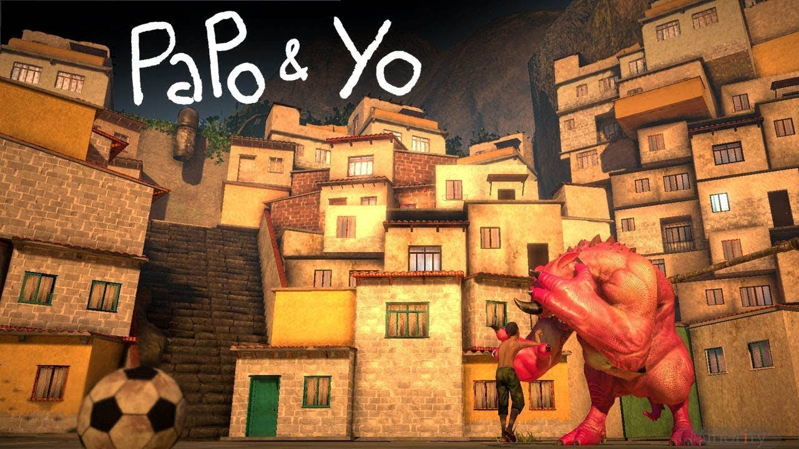
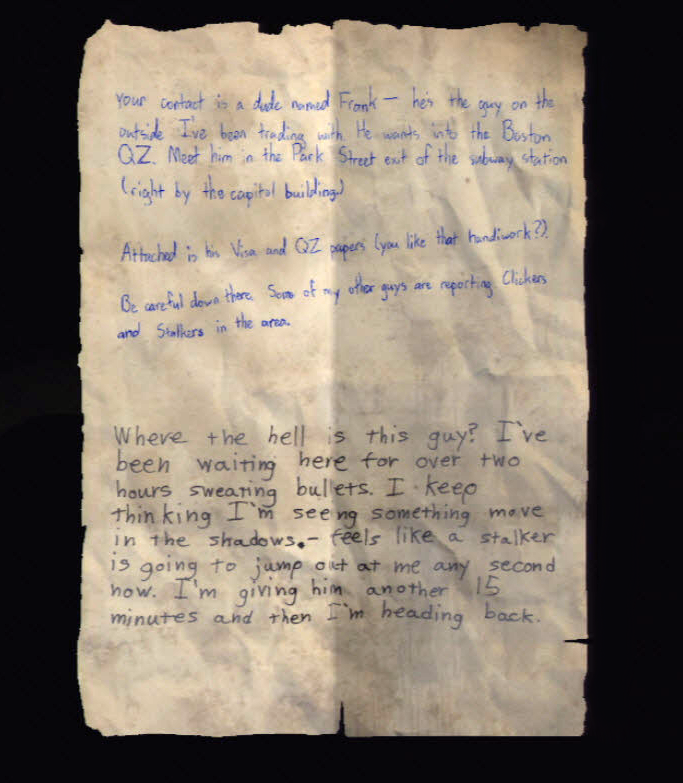

Manuever throughout the land using mouse pressed. When you click on a favela(house) a sound will play!
My concept for this assignment was taken from my love for the Brazilian culture. I have always been fascinated with Brazilian instruments as well as the art and style of the favelas located in the more urban/low-income areas of Brazil. There is a culture that exists that is beautiful in itself, and speaks of the deep history that lives in those areas. The music I am using is from one of my all-time favorite video games called Papo and Yo, about a little boy named Quico who is trying to cure his dad of alcoholicism. It's a beautiful story and it has influenced me a lot in my games. After constructing my VR Experience for Assignment 06, I was inspired to continue and add on to the assignment and present it as my Final Project. I wish to create a VR game where you are trying to reach your lover through the slums of Brazil. You will need to find a certain number of photos scattered throughout in order to progress. Along the way, you will encounter obstacles that will try to stop you from reaching your goal. This game will be very puzzle based, and will focus heavily on music as that is a very important aspect of the Brazilian culture.
As of now, I have successfully started creating my VR world. I created textures for all of my favelas, But I may go in and create more neutral looking favelas. I still am trying to figure out how to stack the favelas in a way that looks more cohesive, being that right now I only have long stacks of them. I'll try to play around with the positioning a bit to see if I can get something that looks a little better.
I am also working a lot on the story, as that is something that I want to be a major part of my game. To be able to work out the story will allow for the player to really understand what is going on. I hope to combine story and game mechanics by starting the player off as a young boy, with fast speed and slowly slow it down to show the progressing of age, The notes that the player will need to collect with be photographs with cute little notes in the back from his/her lover with hopefully some dialogue that plays when the player picks it up.
The obstacles for the game will most likely be moving platforms that you need to dodge/walk on, as well as favelas that change in y and x position that you need to reach to move on. I will use primitive shapes as I believe they will work well to get my message across without slowing my project down. I will also use collison so that the player cannot just walk through objects.
Overall, I am really looking forward to coming up with the next steps to my game. I am really excited to see what else I can implement!
Click here to try the experience!All credit for music goes to the makers of Papo and Yo!